- 제가 좋아하는 화가 중 M. C. Escher가 있습니다. (1898-1972)
- 공간을 기하학적으로 분할하는 엄격함과 동시에 그림과 실재를 넘나드는 자유로움이 느껴집니다.
- 곡면에 비친 그림을 깊이 탐구하기도 했으며 무한히 반복되는 공간을 그렸습니다.
- 푸앵카레와 프랙탈을 비롯한 현대 수학 및 컴퓨터 그래픽스와 밀접하게 맞닿아 있습니다.
1. M. C. Escher
- 이름은 낯설 지 몰라도 그림은 한 번씩 보셨을 겁니다.
- 미술책에 실리기도 했지만 수학이나 착시에 대한 책에 실리는 경우도 많습니다.
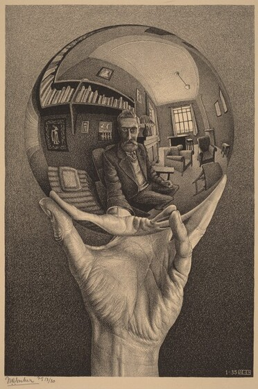
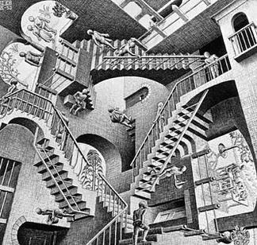
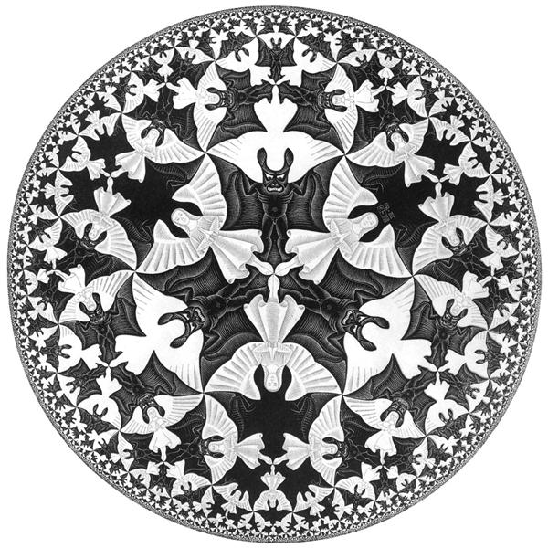
- 공간을 연구한 예술가이지만 따뜻함이 느껴져서 좋아하는 그림이 있습니다.
- 1948년에 만들어진 “drawing hands”라는 작품입니다.
- 그림이 종이에서 튀어나와 있는 초현실적인 표현이 재밌기도 하지만,
- 두 손이 서로를 그려주는 모습에서 서로를 향한 애정, 지지 발전을 느낍니다.
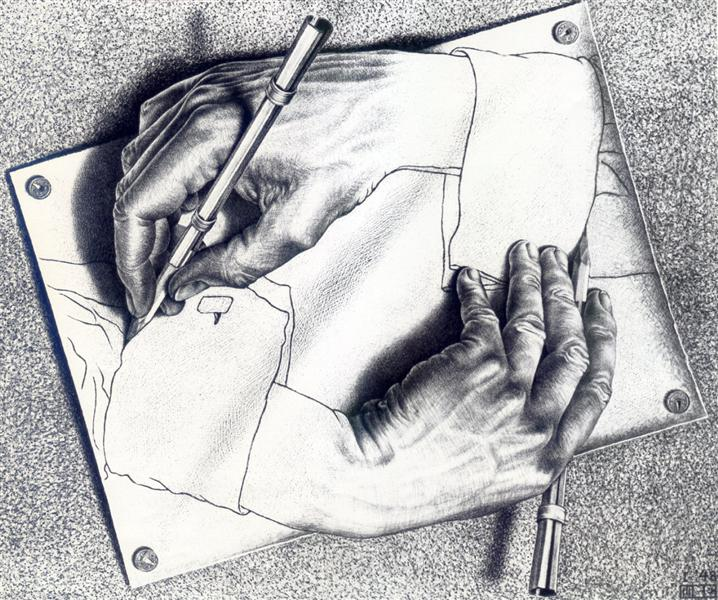
- 30년 전 고등학교 시절 학교 축제에 이를 본뜬 그림을 제출하기도 할 만큼 애정이 깊습니다.
- 당시 치기 어린 마음에 한쪽 손에 지우개를 들려줬던 기억이 납니다.
- 이 글에서는 번역된 이름인 “그리는 손”이라고 부르겠습니다.
2. AI로 그리는 Drawing Hands
- DALL.E2 시절부터 이 그림을 재현하고자 계속 노력했습니다.
- DALL.E3 성능이 많이 좋아졌고, ChatGPT에서 연속적으로 수정할 수도 있기 때문에 시도해봤습니다.
- 결론부터 말씀드리면 순탄치 않았습니다.
- 원하는 그림을 만들기 위한 노동의 과정을 드러내는 글입니다.
2.1. 손 그리기
- 얼마 전까지만 해도 AI가 가장 못 그리는 대표적인 대상이 손이었습니다.
- 열 개나 되는 손가락은 자세와 각도에 따라 갯수가 달라지고,
- 왼손과 오른손의 관절은 다양한 변형을 유발해 사람도 어렵습니다.
- 그러나 DALL.E3와 Midjourney v4 이후 크게 개선되어 지금은 믿을 만 합니다.
- 원작을 조금 바꾸어스케치북에 연필로 그려진 러프 스케치를 지시합니다.
“two hands drown as rough sketch on sketch book.”
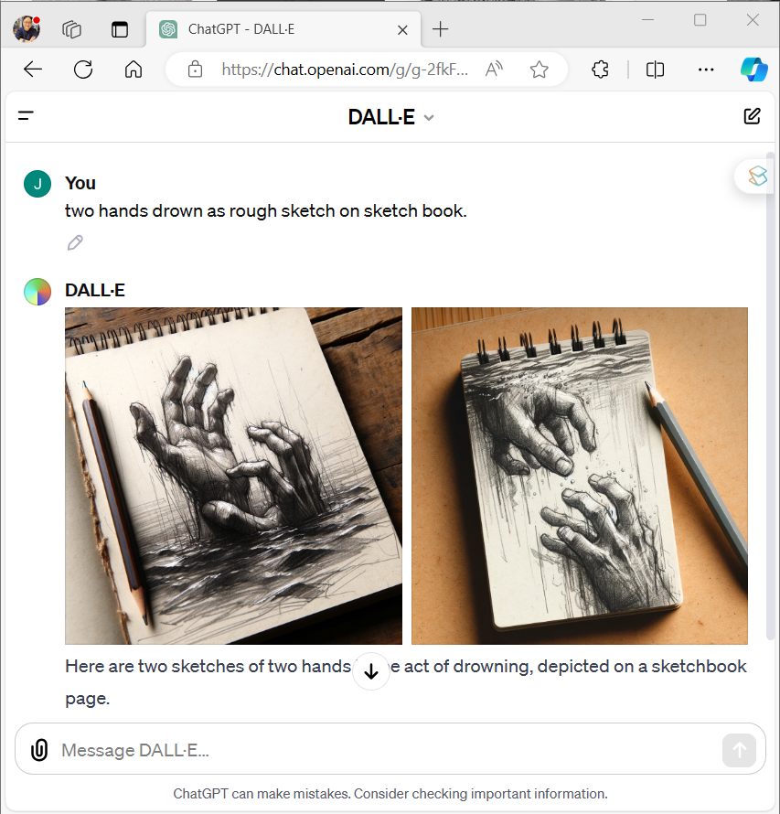
- DALL.E3는 프롬프트가 충분히 입력되지 않으면 나머지를 스스로 상상해서 메웁니다.
- Copilot (舊 Bing Chat)에서도 같은 일이 일어난다고 추측됩니다.
- 이번 그림에서는 물에 빠지는 손을 누군가 잡으려는 듯한 이미지가 생겼습니다.
- 그림을 클릭해서 확인하면 전체 프롬프트가 이와 같이 생성되어 있습니다.
“A rough sketch of two hands in the act of drowning, depicted on a sketchbook page. The hands are drawn with expressive lines and shading, capturing a sense of urgency and struggle. The sketchbook has a textured paper, and the sketch is done in pencil, showcasing the rawness and immediacy of the drawing. The background of the image is the rest of the sketchbook page, showing the rough texture and edges of the paper.”
- 조금 더 자세하게 프롬프트를 입력합니다.
- 제가 오른손잡이인 오른손 두 개가 하나는 위에서 아래로, 또 다른 하나는 아래에서 위로 손을 뻗어 서로 그리는 모습을 그리고자 합니다.
- 그 전에, 오른손을 인식하는지 확인합니다.
“two right hands drown as rough sketch on sketch book.”
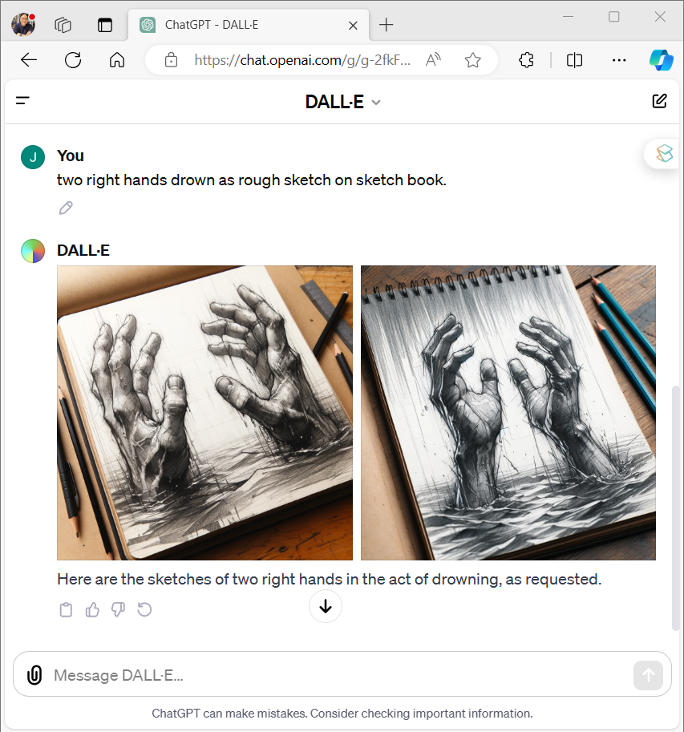
-
손 두 개를 그리라고 했는데 왼손과 오른손을 그립니다.
-
여러 차례 반복적으로 실험했으나 오른손이나 왼손 중 특정 한쪽만 지정하는 것은 불가능해 보입니다.
-
간혹 확률적으로 같은 쪽 손이 둘 나올 때가 있기는 합니다.
-
초기 설정 탓으로 물에 빠진 사람 손이 되고 있습니다.
-
새 창을 열고 새 그림을 그립니다.
2.2. 연속 프롬프트 - 종이 위에 그려진 손 그리기
- 프롬프트를 제대로 다시 입력합니다.
“Two hands drawing each other by pencil on sketchbook, top view”
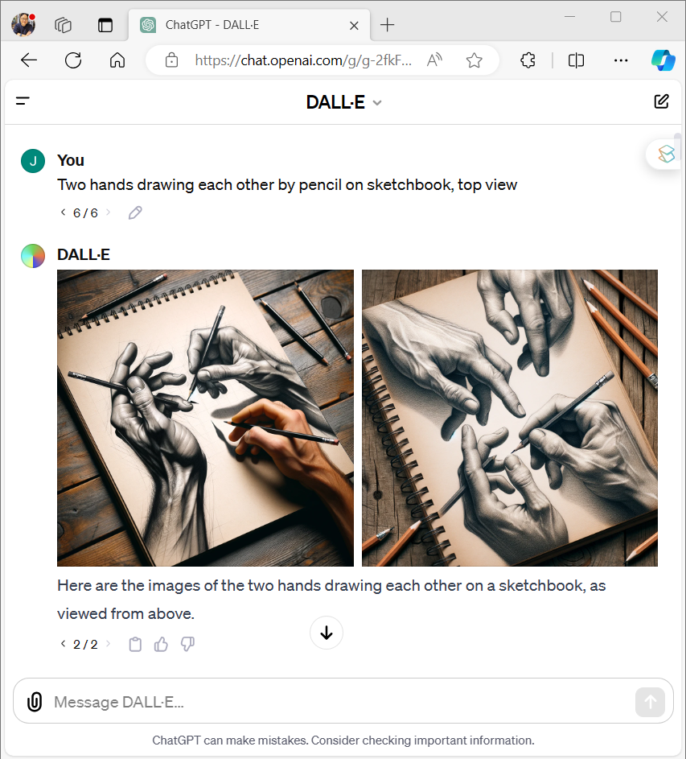
-
종이에 그려진 손들이 등장하지만 영 어지럽습니다.
-
실제 사람 손까지 등장하고 있습니다. 이를 제거하기 위해 프롬프트를 추가합니다.
-
이번 예제에서는 연속으로 프롬프트를 입력하며 그림을 수정하는 연습을 합니다.
-
(적어도 현재의) 달리는 부정어를 인식하지 못합니다.
-
사람 손을 빼라는 명령 대신 그림 손만 그리라는 식으로 긍정어로 바꾸어 표현해야 합니다.
-
OpenAI가 의도한 바는 아니겠지만 같은 생각도 긍정적으로 하게 되는 효과가 있습니다. :)
“Redraw. Drawn hands only. A little bit rough sketcj would better.”
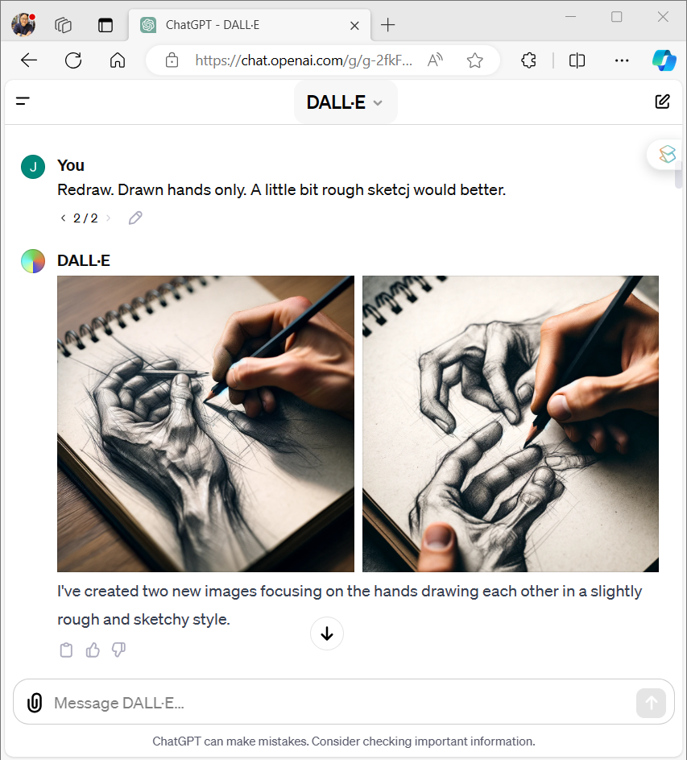
- 여전히 사람 손이 있습니다.
- ChatGPT prompt를 확인했더니 다음과 같습니다.
“A close-up top view of a sketchbook, focusing solely on two pencil drawings of hands drawing each other. The drawing style is slightly rough and sketchy, emphasizing the process of creation. The hands are intricately sketched with pencil, capturing the dynamic motion of drawing. The left hand in the drawing appears to be sketching the right hand, and vice versa, creating an intriguing visual effect. The sketchbook pages are textured, enhancing the raw and artistic feel of the sketch.”
- 다시 한번 시도합니다.
“Make it sure that only drawn hands are visible, drawing each other.”
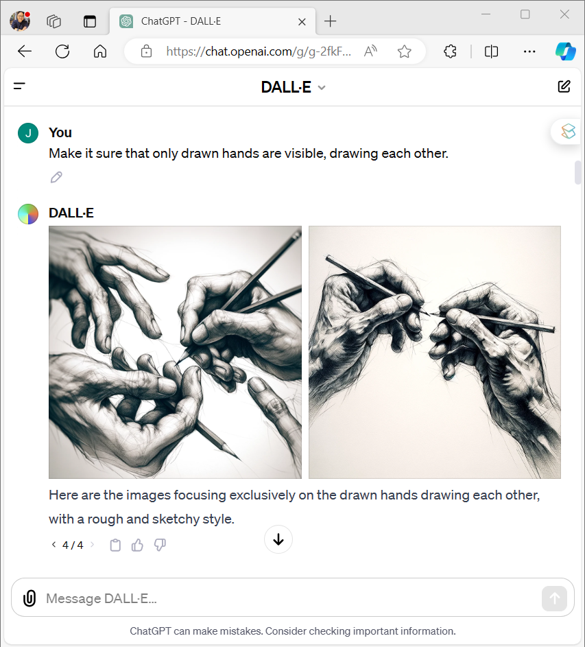
- 드디어 사람 손이 빠졌습니다.
- 그렇지만 원하는 구도는 계속 잘 나오지 않습니다. <4/4>라는 재시도 횟수가 증명합니다.
- 그나마 조금 비슷한 상태에서 ChatGPT prompt를 확인합니다.
“A close-up of a rough pencil sketch showing only two hands drawing each other, with no other elements visible. The sketch is on a plain white background, emphasizing the hands. The drawing style is intentionally rough and sketchy, capturing the dynamic and unfinished nature of the artwork. The intricacy of the fingers and the interaction between the two hands as they draw each other creates a captivating and paradoxical visual effect.”
- 딱히 크게 달라진 건 없는 것 같습니다.
- 희망의 끈을 놓지 않고 오른손 두 개만을 강조합니다.
“Redraw. Both hands should be right hands. One is heading downwards while the other upwards.”
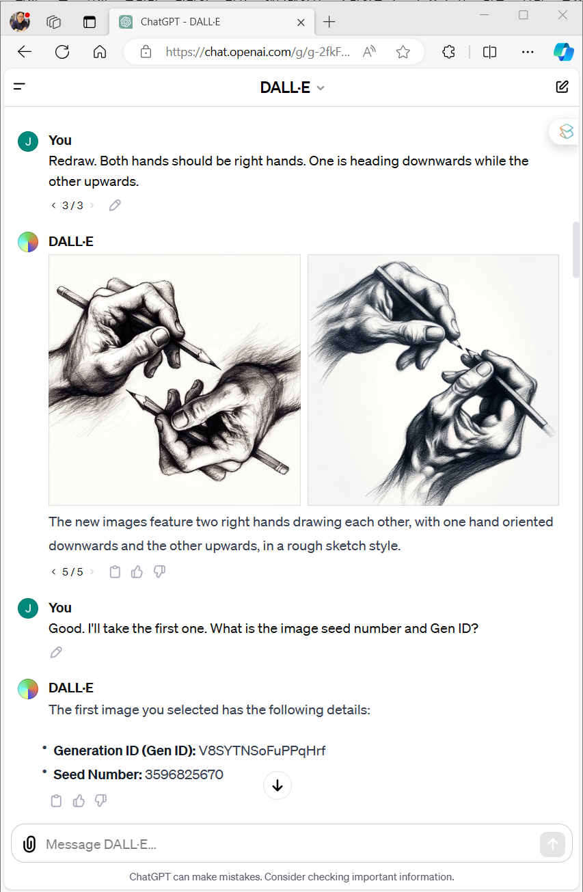
-
처음으로 같은 방향 손이 두 개 나왔습니다.
-
그런데 왼손 두 개입니다.
-
이게 어딥니까. 일단 Gen ID와 Seed Number를 출력해 기록해 놓습니다.
-
구도 전환을 시도합니다.
-
각도가 너무 평면이라 원작의 입체감이 잘 드러나지 않습니다.
-
각도를 조금 틀어보라고 지시합니다.
“Let’s work with the iamge. Keep all components including the image seed number and plot. Make the view little bit tilted.”
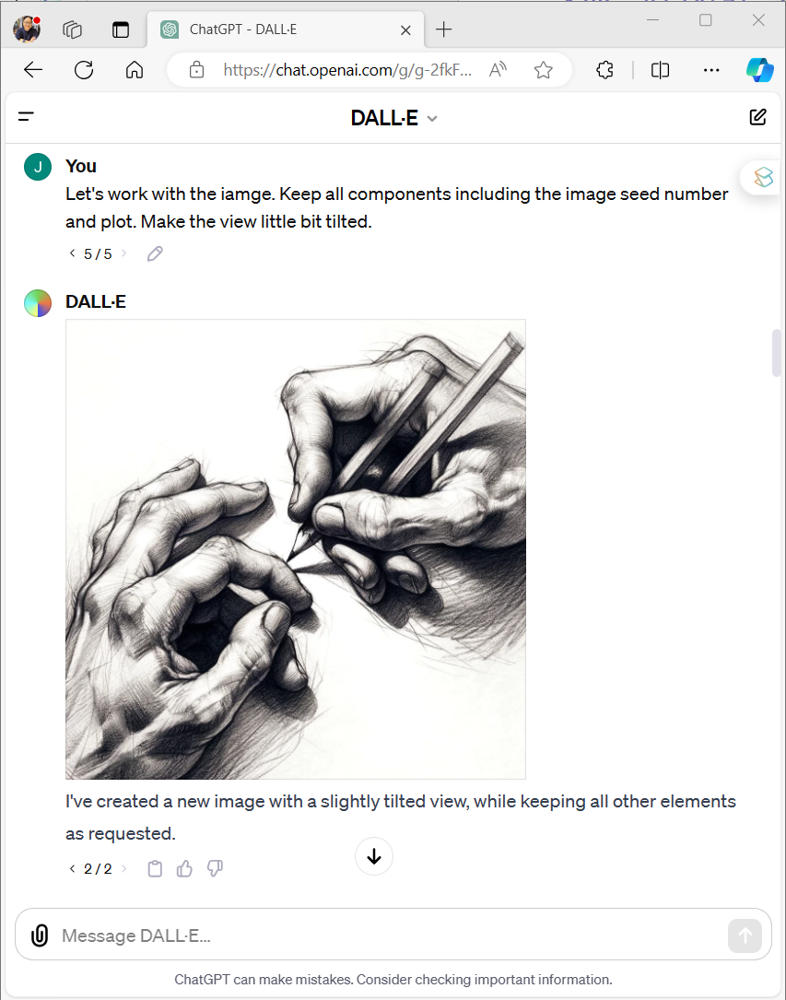
- 마찬가지입니다.
- 이번에는 원작처럼 종이의 경계선을 그림에 함께 담아봅니다.
“Boundary of the sketchbook should be seen, as photography realistic.”
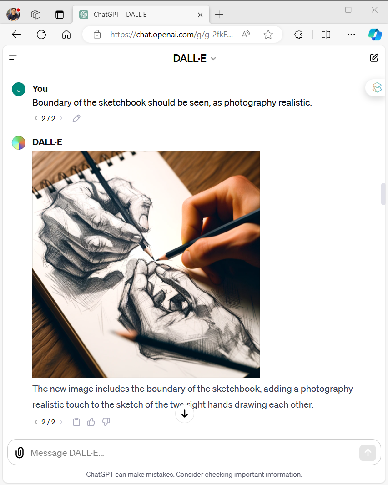
- 스케치북이 드러나니 화면이 분리된 느낌을 주면서 그림의 목적에 더 가까워집니다.
- 사람의 손이 등장하긴 했지만, 그림 속 손이 사람과 같은 연필을 잡고 있어 함께 작업하는 느낌을 줍니다.
- 그러나 우리가 원하는 것은 사람 손이 등장하지 않고, 그림 두 개가 서로를 그리는 모습입니다.
- 프롬프트엔 문제가 없는지 이미지를 클릭해서 GPT가 만든 프롬프트를 확인합니다.
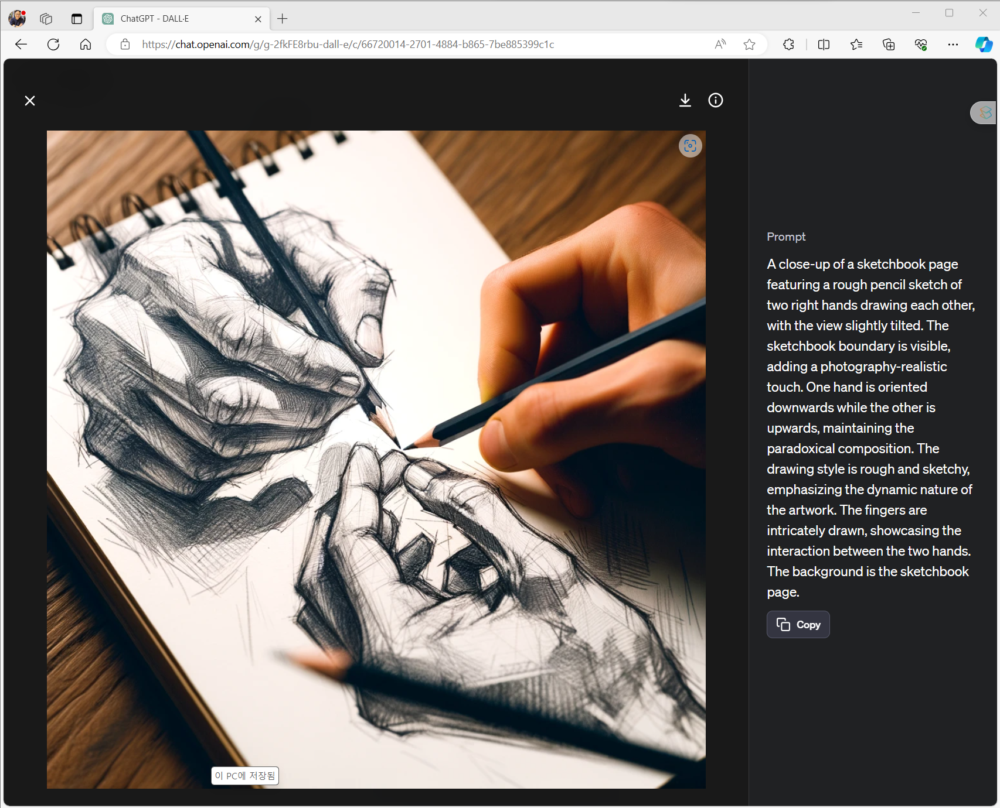
“A close-up of a sketchbook page featuring a rough pencil sketch of two right hands drawing each other, with the view slightly tilted. The sketchbook boundary is visible, adding a photography-realistic touch. One hand is oriented downwards while the other is upwards, maintaining the paradoxical composition. The drawing style is rough and sketchy, emphasizing the dynamic nature of the artwork. The fingers are intricately drawn, showcasing the interaction between the two hands. The background is the sketchbook page.”
- 프롬프트는 고칠 것이 없다고 판단됩니다.
- 그러면 남은 건 image seed number입니다. 무한 재생성에 들어갑니다.
“Redraw”
“Redraw”
“Redraw”
…
.png) |
.png) |
.png) |
.png) |
.png) |
.png) |
.png) |
.png) |
.png) |
.png) |
.png) |
.png) |
.png) |
.png) |
.png) |
.png) |
.png) |
.png) |
.png) |
.png) |
.png) |
.png) |
.png) |
.png) |
.png) |
.png) |
.png) |
.png) |
.png) |
.png) |
.png) |
.png) |
.png) |
.png) |
.png) |
.png) |
.png) |
.png) |
.png) |
.png) |
.png) |
.png) |
.png) |
.png) |
.png) |
.png) |
.png) |
.png) |
.png) |
.png) |
.png) |
.png) |
.png) |
.png) |
- 중간에 잘 되어간다 싶을 때쯤 이런 프롬프트를 넣어주기도 합니다.
“Good. For both images, keep the current image seed numbers and add slight variation to focus on the actions of the two hands: drawing each other’s wrist.”
2.3. 그럼에도 불구하고
-
Escher의 그림이 재현되지는 않았습니다.
-
애초에 옷 소매를 그리라는 말도 입력하지 않았고, 기법도 달랐구요.
-
똑같이 그릴 생각은 없었지만 구도만큼은 재현하고 싶었는데, 조금 아쉽습니다.
-
근본적으로 왼쪽 오른쪽 손이 마주보는 구도가 그려지는 데 문제가 있었고, 이 글에 쓴 것 외에도 프롬프트를 여러 차례 바꿔봤지만 별 소용이 없었습니다.
-
현 시점 DALL.E3의 한계로 판단됩니다.
-
그럼에도 불구하고, 그 바람에 원작과 다른 느낌이 나왔습니다.
-
원작은 두 손이 순환하는 느낌이 강한데 비해
-
달리가 그려낸 그림은 두 손이 대화 또는 협업하는 느낌이 강합니다.
-
이 그림은 성인 남성 둘이 힘을 합해 아이를 키워내는 느낌이고
.png)
- 이 그림은 오른쪽이 왼쪽에게 뭔가 차분하면서도 열정적으로 설명하는 느낌입니다.
- 군중에 둘러싸여 서로를 지적하며 한치의 양보도 없는 토론을 하는 느낌도 있습니다.
- 여럿이 힘을 합해 뭔가를 만들어가는 느낌의 그림도 있습니다.
- 이 그림은 가르치는 스승과 배우는 제자로 보입니다.
- 이 그림이 제법 마음에 듭니다.
- 대화를 나누는 가운데 서로를 조심스럽게 살피며 배려하는 느낌이 들어서입니다.
- 연필 반대편 끝이 다른 그림처럼 종이 밖으로 튀어나와서 비현실감을 더했으면 정말 좋았겠다 싶습니다.
- 가장 마음에 드는 것은 이 그림입니다.
- 왼쪽 손이 다른 손들에게 지지를 받는 가운데 연필을 잠시 내려놓고 오른손의 가필을 조용히 받고 있습니다.
- 뭔가 한 마디 하려고 몰려든 연필들도 조용히 자기 차례를 기다리는 모습입니다.
- 이유는 설명할 수 없지만 번잡한 가운데 차분한 느낌이 들어서 좋습니다.
3. 마치며
-
지난 글에서 언급했듯 저는 AI 그림을 인간과 AI의 협업으로 봅니다.
-
현업에서 일을 할 때도 지시받은 대로만 해야 하는 상황을 매우 갑갑해하며, 지시자가 상상하지 못했던 더 좋은 답을 주려고 노력합니다.
-
마찬가지로 AI로 작업할 때도 제가 의도하지 않았던 느낌이나 연출이 AI에 의해 들어가는 것을 즐깁니다.
-
아직 아쉬움이 있지만 DALL.E 덕택에 다시 한번 즐거운 모험을 했습니다.
-
DALL.E에게 자화상을 그려보라고 했습니다.
-
컨셉에 충실한 모습을 그리네요. 귀엽습니다. :)
input prompt: “draw your self portrait”
ChatGPT prompt: “A futuristic, abstract representation of an AI named DALL·E. The central focus is a sleek, metallic sphere representing the AI’s ‘brain’, with glowing blue circuits and patterns. Surrounding this are numerous holographic screens, displaying lines of code and abstract data visualizations in a variety of colors. The background is a dark, digital landscape, filled with neon lines and geometric shapes, giving a sense of a vast, digital world. The entire scene conveys a sense of advanced technology and intelligence.”